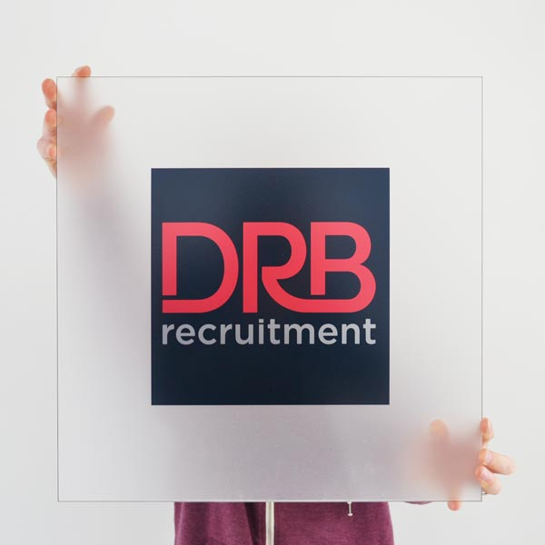
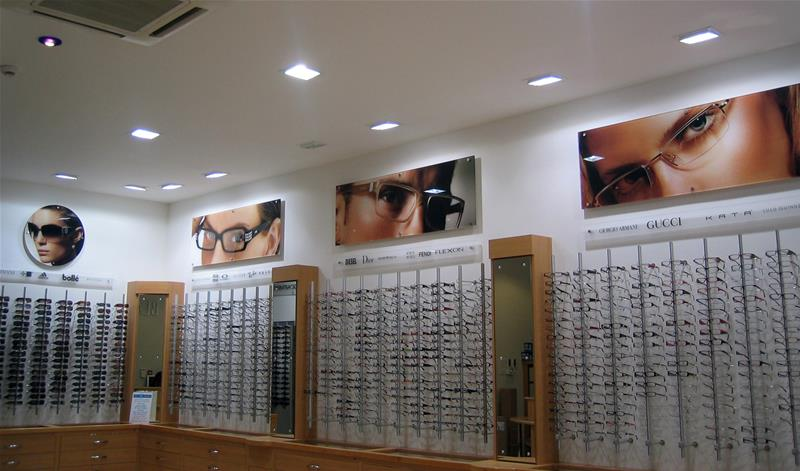
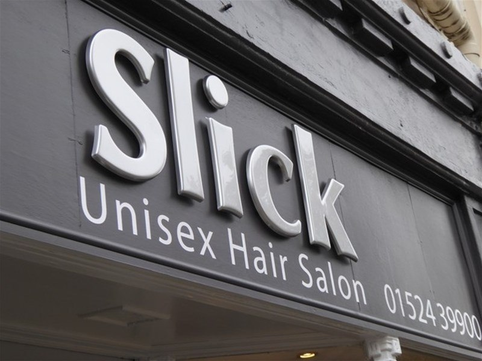
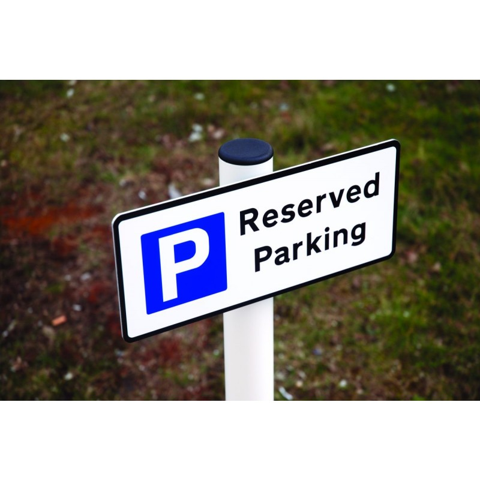
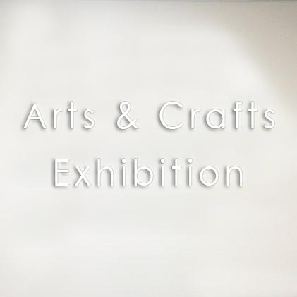

SIGNAGES
Outdoor Advertising Display:
Your Signage’s need to be bold, memorable and most of all eye-catching. They also need to reflect your brand and give the passer-by a glimpse of what to expect when they enter your shop. A high-quality, professionally-made shop sign can be worth its weight in gold to your business. No matter what your signage requirements, if you’re interested in buying a new shop sign, get in touch with our team today and find out what we can do for you.
AFS STICKERING, we have the tools, experience and creativity to produce truly excellent shop signs. We always ensure that our clients are completely satisfied with our results.
Our team have years of experience working with all types of sign material including Aluminum, Acrylic, Vinyl, PVC foam, Stainless Steel, Brass, Copper, Brass, WPC & Wood. Whatever variety of shop sign you’d like to buy, you can be sure that your order is in safe hands with us.
The modern look for your business to really make an impression. This proven commercial sign, gives your business the advertising it deserves.
Signage boards and signs have been using for years as a way of advertising their business while working on a job. A good professional sign sends out the right image for your company and can attract further business. It is one of the best ways to advertise your business to new customers as it works as an endorsement and shows trust in you. Especially if works are visible, it also shows potential customers the work you do which builds further confidence in your company. These are just a few of the reasons that a Sign Board is essential.
Don’t miss out on the chance to advertise what a great job you are doing and advertise your company with a Sign Board. Our boards are available in a choice of sizes to best suit the location you are working at. We can also make sure that you have a highly professional looking board to present the perfect image of your company. Our design team will work to your specifications in creating something you can be proud to represent your company. You can also fully customize your design with our design team.
Outdoor and external signs for promoting sales and business in the high street or no matter where your business does, from shops to restaurants and even public houses, we have all the signage and banners you will ever need. AFS STICKERING offering a premium sign service for all your sign needs, from basic wall poster frames to directional and information signs, to printed exterior logos. Stand banner produce signs for events and promotional days, to sporting display banners and even Standees and promotions, sales and marketing. We manufacture all kinds of Signage’s for all your needs at one stop.
Some of our external signs are ideal for use all year within the elements and are guaranteed to last. Stand banner print all our PVC banners and flags for advertising stand outside, we hand finish each and branded product in-house. Whatever your needs, we produce the right product at the right price, from wall mounted adverts and outdoor banner stands to custom printed.
We also produce supply large selection of poster sign frames and display Sign for self-promotion and also illuminated and backlight advertising stands for permanent promotion. Used for every facet of business that wants to promote special offers and generate sales.
All our print processes are done in-house, so you can rest assured that your wallpaper or poster printing is in good hands. At standee banner, you can choose from every printing possibility and print solution for exhibitors, marketer or advertiser. We print using only the best quality of materials, Fantastic quality photo printed with protective over laminate.
Printed signs and graphics for long-term use, including fabric, Canvas, Vinyl & Flex printed graphics used for a variety of different stands and media’s, including exhibition graphics, shop fascia signs, health and safety and even printed inlay graphics for sun boards and sandwich construction Acrylic Signage glass graphics. We provide a cost-effective professional service for instant design for our products that can be printed and manufactured for next day delivery. Graphic design service, complete Branding for all your company graphics, based on your existing corporate branding. Your literature and poster displays will be designed by experienced graphic designers who only work on exhibitions stands, so making you stand out from the competition. We can easily adapt your current company branding to work for any of our products to create the visual effect you need to attract new clients and customers.
Our team have years of experience working with all types of sign material including Aluminum, Acrylic, Vinyl, PVC foam, Stainless Steel, Brass, Copper, Brass, WPC & Wood. Whatever variety of shop sign you’d like to buy, you can be sure that your order is in safe hands with us.
The modern look for your business to really make an impression. This proven commercial sign, gives your business the advertising it deserves.
Signage boards and signs have been using for years as a way of advertising their business while working on a job. A good professional sign sends out the right image for your company and can attract further business. It is one of the best ways to advertise your business to new customers as it works as an endorsement and shows trust in you. Especially if works are visible, it also shows potential customers the work you do which builds further confidence in your company. These are just a few of the reasons that a Sign Board is essential.
Don’t miss out on the chance to advertise what a great job you are doing and advertise your company with a Sign Board. Our boards are available in a choice of sizes to best suit the location you are working at. We can also make sure that you have a highly professional looking board to present the perfect image of your company. Our design team will work to your specifications in creating something you can be proud to represent your company. You can also fully customize your design with our design team.
Outdoor and external signs for promoting sales and business in the high street or no matter where your business does, from shops to restaurants and even public houses, we have all the signage and banners you will ever need. AFS STICKERING offering a premium sign service for all your sign needs, from basic wall poster frames to directional and information signs, to printed exterior logos. Stand banner produce signs for events and promotional days, to sporting display banners and even Standees and promotions, sales and marketing. We manufacture all kinds of Signage’s for all your needs at one stop.
Some of our external signs are ideal for use all year within the elements and are guaranteed to last. Stand banner print all our PVC banners and flags for advertising stand outside, we hand finish each and branded product in-house. Whatever your needs, we produce the right product at the right price, from wall mounted adverts and outdoor banner stands to custom printed.
We also produce supply large selection of poster sign frames and display Sign for self-promotion and also illuminated and backlight advertising stands for permanent promotion. Used for every facet of business that wants to promote special offers and generate sales.
All our print processes are done in-house, so you can rest assured that your wallpaper or poster printing is in good hands. At standee banner, you can choose from every printing possibility and print solution for exhibitors, marketer or advertiser. We print using only the best quality of materials, Fantastic quality photo printed with protective over laminate.
Printed signs and graphics for long-term use, including fabric, Canvas, Vinyl & Flex printed graphics used for a variety of different stands and media’s, including exhibition graphics, shop fascia signs, health and safety and even printed inlay graphics for sun boards and sandwich construction Acrylic Signage glass graphics. We provide a cost-effective professional service for instant design for our products that can be printed and manufactured for next day delivery. Graphic design service, complete Branding for all your company graphics, based on your existing corporate branding. Your literature and poster displays will be designed by experienced graphic designers who only work on exhibitions stands, so making you stand out from the competition. We can easily adapt your current company branding to work for any of our products to create the visual effect you need to attract new clients and customers.
Proofing your Artwork
We are not like other printers; we always supply a design/layout preview for your approval free of charge. We will not begin production on your sign until you are happy with your proof. If any amendments need to be made, we can then offer our free design service.
Free Design
If you wish to use our free Design Service for your sign please send a brief of the design you require to the below email address with your Art work.
Custom Requirements
We do offer custom sizes for our signs if you would like a custom size please contact our design team.
3D SIGNAGE’S:
3D sign letters are made by cutting a sheet of material on a cnc-cutter to the shape and size of the letters or words that you need. The letters are then fabricated and hand finished to create the depth of the letters. We’re able to make the letters to the exact specifications of the design that you need and there is a vast range of fonts which we’re able to machine the letters to. The letters can either be fixed flush to the wall or raised off the wall with brackets.
3D acrylic letters and logos are bespoke and made-to-order in a range of sizes, shapes and styles. Suitable for both internal and external use. Because of the advantages of lower costs and maintenance compared to metal, acrylic lettering is used in all kinds of indoor and outdoor signs such as Office & Shops.
Acrylic lettering is a great method of signage and is widely available in a whole range of color’s, sizes and finishes. It also comes in translucent color’s which is great for creating lighting effects, Acrylic lettering is fantastic for displaying a clean, new, modern feel and for providing a splash of colour which brings your sign to life.
Acrylic is simply a brilliant versatile material which is made from a bi-product by turning crude oil into petrol. In simple terms, Acrylic is a thick sheet of plastic that can be heated to form many different shapes and sizes and can be used in a whole range of ways. Our 3D acrylic logos are also available in a number of sizes and thicknesses.
Inside the Acrylic tray, High Quality LEDs are used to shine through the acrylic giving the sign a backlit sign effect. Our Custom Lighted Signs will help you stand out during the day and at night.
Possibly one of the most popular signage solutions. The LED Signage’s is a quick and easy method to promote your business with the benefit of continuous LED illumination at a very low energy consumption.
3D acrylic letters and logos are bespoke and made-to-order in a range of sizes, shapes and styles. Suitable for both internal and external use. Because of the advantages of lower costs and maintenance compared to metal, acrylic lettering is used in all kinds of indoor and outdoor signs such as Office & Shops.
Acrylic lettering is a great method of signage and is widely available in a whole range of color’s, sizes and finishes. It also comes in translucent color’s which is great for creating lighting effects, Acrylic lettering is fantastic for displaying a clean, new, modern feel and for providing a splash of colour which brings your sign to life.
Acrylic is simply a brilliant versatile material which is made from a bi-product by turning crude oil into petrol. In simple terms, Acrylic is a thick sheet of plastic that can be heated to form many different shapes and sizes and can be used in a whole range of ways. Our 3D acrylic logos are also available in a number of sizes and thicknesses.
Inside the Acrylic tray, High Quality LEDs are used to shine through the acrylic giving the sign a backlit sign effect. Our Custom Lighted Signs will help you stand out during the day and at night.
Possibly one of the most popular signage solutions. The LED Signage’s is a quick and easy method to promote your business with the benefit of continuous LED illumination at a very low energy consumption.
Great points about our LED Signs
- Beautifully 3D Signs
- Professionally Routed Text
- Folded ACP Composite
- High Quality LEDs
2D SIGNAGE’S
Our LED signs are made from a single piece of ACP panel which is folded into a tray and then braced and riveted to ensure rigidity, your letters are then routed out and then backed with opaque Acrylic Panel
Inside the aluminum tray, High Quality LEDs are used to shine through the acrylic giving the sign a backlit sign effect. Our Custom Lighted Signs will help you stand out during the day and at night.
Possibly one of the most popular signage solutions. The LED Signage’s is a quick and easy method to promote your business with the benefit of continuous LED illumination at a very low energy consumption.
Aluminum Composite is a fantastic material for sign fascia’s as its light weight, cost-effective and easily to produce for a fast turnaround. In many cases, if the colour you wanted isn’t one of the standard supplied color’s then we can vinyl wrap the fascia to achieve the colour you need. This material is not as strong as actual aluminum so it has a slightly shorter life span however it’s a cheaper alternative and ideal for many signs.
The aluminum composite fascia can then be sign written in a number of ways including vinyl decals, flat cut letters and raised 3D letters.
The logo or text is individually cut from pre-colored vinyl film which is fitted to the face of the sign. This method of sign writing ensures all the graphics are fixed flush to the fascia panel and allows for changes to be made to the panel at a later date for example if the phone number changes or if the shop name changes. The vinyl decals can also be printed so you're able to display a photographic image on the sign or if a particular pantone colour or CMYK colour is needed for the text or logo.
Because the tray panel has folded edges it means the fixings used to secure the fascia to the shop front are well hidden which displays a cleaner tidier finish, unlike flat sign panels which requires the fixings to the fixed through the face of the tray.
Made from a flat sheet of aluminum which is machine folded to make the sign ridged and to create some depth to the sign. The sign tray is then sign written with flat cut acrylic letters or shapes to make up the logo. The acrylic letters can either be fixed flush to the fascia panel so that it creates a slightly raised effect or they can be fitted to raised brackets to create more of a three dimensional effect. With a range of acrylic color’s to choose from, the possibilities are endless and we can also combine acrylic letters with vinyl decals so parts of the sign are raised and other parts are flush.
The shop name or logo is then laser-cut out from the sign and removed which allows the internal lights to shine through and illuminated the letters clearly. Also known as stencil cut fascias, this method of sign making is hugely popular as it ensures the brand name is clearly visible and the production costs are much more cost-effective compared to 3D built up illuminated letters.
Inside the aluminum tray, High Quality LEDs are used to shine through the acrylic giving the sign a backlit sign effect. Our Custom Lighted Signs will help you stand out during the day and at night.
Possibly one of the most popular signage solutions. The LED Signage’s is a quick and easy method to promote your business with the benefit of continuous LED illumination at a very low energy consumption.
Aluminum Composite is a fantastic material for sign fascia’s as its light weight, cost-effective and easily to produce for a fast turnaround. In many cases, if the colour you wanted isn’t one of the standard supplied color’s then we can vinyl wrap the fascia to achieve the colour you need. This material is not as strong as actual aluminum so it has a slightly shorter life span however it’s a cheaper alternative and ideal for many signs.
The aluminum composite fascia can then be sign written in a number of ways including vinyl decals, flat cut letters and raised 3D letters.
The logo or text is individually cut from pre-colored vinyl film which is fitted to the face of the sign. This method of sign writing ensures all the graphics are fixed flush to the fascia panel and allows for changes to be made to the panel at a later date for example if the phone number changes or if the shop name changes. The vinyl decals can also be printed so you're able to display a photographic image on the sign or if a particular pantone colour or CMYK colour is needed for the text or logo.
Because the tray panel has folded edges it means the fixings used to secure the fascia to the shop front are well hidden which displays a cleaner tidier finish, unlike flat sign panels which requires the fixings to the fixed through the face of the tray.
Made from a flat sheet of aluminum which is machine folded to make the sign ridged and to create some depth to the sign. The sign tray is then sign written with flat cut acrylic letters or shapes to make up the logo. The acrylic letters can either be fixed flush to the fascia panel so that it creates a slightly raised effect or they can be fitted to raised brackets to create more of a three dimensional effect. With a range of acrylic color’s to choose from, the possibilities are endless and we can also combine acrylic letters with vinyl decals so parts of the sign are raised and other parts are flush.
The shop name or logo is then laser-cut out from the sign and removed which allows the internal lights to shine through and illuminated the letters clearly. Also known as stencil cut fascias, this method of sign making is hugely popular as it ensures the brand name is clearly visible and the production costs are much more cost-effective compared to 3D built up illuminated letters.
Great points about our LED Signs
- Beautifully Illuminated LED Signs
- Professionally Routed Text
- Folded ACP Composite
- High Quality LEDs
- Quick Turn Around


Clear Acrylic/Reception Signage’s:
Your Signage’s need to be bold, memorable and most of all eye-catching. They also need to reflect your brand and give the passer-by a glimpse of what to expect when they enter your shop. A high-quality, professionally-made shop sign can be worth its weight in gold to your business. No matter what your signage requirements, if you’re interested in buying a new shop sign, get in touch with our team today and find out what we can do for you.
AFS STICKERING, we have the tools, experience and creativity to produce truly excellent shop signs. We always ensure that our clients are completely satisfied with our results.
Our team have years of experience working with all types of sign material including, Acrylic, Vinyl, PVC foam, Roll-ups Standees, Stainless Steel, Brass, Copper, Titanium, WPC & Wood. Whatever variety of shop sign you’d like to buy, you can be sure that your order is in safe hands with us.
The modern look for your business to really make an impression. This proven commercial sign, gives your business the advertising it deserves.
Produced from Clear Imported Acrylic, Solid Acrylic letter, Vinyl Printing Etc..
Different thickness Flame Polished Acrylic. Your Design is then printed to the reverse of the substrate, using UV resistant eco solvent inks...
Each letter or element to your logo is precision routed and machined to achieve an incredibly accurate representation of your design. The Acrylic itself comes with a gloss finish as standard and is available in a range of different colors.
Signage boards and signs have been using for years as a way of advertising their business while working on a job. A good professional sign sends out the right image for your company and can attract further business. It is one of the best ways to advertise your business to new customers as it works as an endorsement and shows trust in you. Especially if works are visible, it also shows potential customers the work you do which builds further confidence in your company. These are just a few of the reasons that a Sign Board is essential.
Don’t miss out on the chance to advertise what a great job you are doing and advertise your company with a Sign Board. Our boards are available in a choice of sizes to best suit the location you are working at. We can also make sure that you have a highly professional looking board to present the perfect image of your company. Our design team will work to your specifications in creating something you can be proud to represent your company. You can also fully customize your design with our design team.
AFS STICKERING, we have the tools, experience and creativity to produce truly excellent shop signs. We always ensure that our clients are completely satisfied with our results.
Our team have years of experience working with all types of sign material including, Acrylic, Vinyl, PVC foam, Roll-ups Standees, Stainless Steel, Brass, Copper, Titanium, WPC & Wood. Whatever variety of shop sign you’d like to buy, you can be sure that your order is in safe hands with us.
The modern look for your business to really make an impression. This proven commercial sign, gives your business the advertising it deserves.
Produced from Clear Imported Acrylic, Solid Acrylic letter, Vinyl Printing Etc..
Different thickness Flame Polished Acrylic. Your Design is then printed to the reverse of the substrate, using UV resistant eco solvent inks...
Each letter or element to your logo is precision routed and machined to achieve an incredibly accurate representation of your design. The Acrylic itself comes with a gloss finish as standard and is available in a range of different colors.
Signage boards and signs have been using for years as a way of advertising their business while working on a job. A good professional sign sends out the right image for your company and can attract further business. It is one of the best ways to advertise your business to new customers as it works as an endorsement and shows trust in you. Especially if works are visible, it also shows potential customers the work you do which builds further confidence in your company. These are just a few of the reasons that a Sign Board is essential.
Don’t miss out on the chance to advertise what a great job you are doing and advertise your company with a Sign Board. Our boards are available in a choice of sizes to best suit the location you are working at. We can also make sure that you have a highly professional looking board to present the perfect image of your company. Our design team will work to your specifications in creating something you can be proud to represent your company. You can also fully customize your design with our design team.
Great points about our Acrylic Signs
- Different Thickness 100% Clear Imported Acrylic
- Eco Solvent Inks
- UV Protection
- Indoor or Outdoor Use






METAL SIGNAGE’S:
Metal Signage’s is commonly used in the manufacturing of external signs due to its durability. Unlike some other materials there is no oxidisation or Rust that occurs with an Metal sign. So your sign will stay looking just as great as the day it arrived for many years to come. We use the highest quality materials when making all of our Metal signs.
Metal letters and logos are used as reliable forms of signage across the board from large buildings, offices and businesses to retail outlets, restaurants, schools and warehouses. Metal lettering ultimately displays a classy look which you don’t get from other production methods and it denotes permanence, reliability and dependability. Our choice of metals range from polished metal, brushed metal, rusted metal and painted metal.
Built up letters give you a three dimensional feel to your sign which makes them stand out from flat cut lettering. This type of metal lettering is manufactured from a flat metal sheet and fabricated to produce each unique letter.
The built up letters consist of a "letter face" which is displayed on the front of the sign and a "return side" which is also visible when fixed to the wall. This method gives the illusion that the letters are solid when in actual fact they're hollow. The advantages in using this method is it reduces the cost as well as the weight of the shop sign so they can be displayed and fixed to virtually any wall or front of shop.
These type of letters are made to order in a range of fonts, sizes and styles. The shape of the letter is laser cut from a flat sheet of metal. A strip of metal is folded around the side of the letter to create the return side and depth of the letters. This is usually soldered onto the side of the letter and a range of return sizes are used depending on how thick or chunky you'd like the letters to look.
The letters are then fitted to the wall with a two part nut and bolt fixing. The male-part of the fixing is welded onto the back of the letter. The female-part of the fixing is fitted onto the wall. The two parts of the fixing then slot together and are tightened up securely with a spanner to ensure they're securely into position.
The flat-cut letters consist of a "letter face" which is displayed on the front of the sign and not a "return side". The advantages in using this method is it reduces the cost compared to the built-up letters as well as the weight of the shop sign so they can be displayed and fixed to virtually any wall or front of shop.
These types of letters are made to order in a range of fonts, sizes and styles. The shape of the letter is laser cut from a flat sheet of metal. The letters are then fitted to the wall with a two part nut and bolt fixing. The male-part of the fixing is welded onto the back of the letter. The female-part of the fixing is fitted onto the wall. The two parts of the fixing then slot together and are tightened up securely with a spanner to ensure they're securely into position.
Metal letters and logos are used as reliable forms of signage across the board from large buildings, offices and businesses to retail outlets, restaurants, schools and warehouses. Metal lettering ultimately displays a classy look which you don’t get from other production methods and it denotes permanence, reliability and dependability. Our choice of metals range from polished metal, brushed metal, rusted metal and painted metal.
Built up letters give you a three dimensional feel to your sign which makes them stand out from flat cut lettering. This type of metal lettering is manufactured from a flat metal sheet and fabricated to produce each unique letter.
The built up letters consist of a "letter face" which is displayed on the front of the sign and a "return side" which is also visible when fixed to the wall. This method gives the illusion that the letters are solid when in actual fact they're hollow. The advantages in using this method is it reduces the cost as well as the weight of the shop sign so they can be displayed and fixed to virtually any wall or front of shop.
These type of letters are made to order in a range of fonts, sizes and styles. The shape of the letter is laser cut from a flat sheet of metal. A strip of metal is folded around the side of the letter to create the return side and depth of the letters. This is usually soldered onto the side of the letter and a range of return sizes are used depending on how thick or chunky you'd like the letters to look.
The letters are then fitted to the wall with a two part nut and bolt fixing. The male-part of the fixing is welded onto the back of the letter. The female-part of the fixing is fitted onto the wall. The two parts of the fixing then slot together and are tightened up securely with a spanner to ensure they're securely into position.
Flat Cut Raised letters
Flat cut letters are also designed to give you a three dimensional feel to your sign – they’re just not as chunky as the Built Up 3D Metal Letters. This type of metal lettering is manufactured from a flat metal sheet and fabricated to produce each unique letter.The flat-cut letters consist of a "letter face" which is displayed on the front of the sign and not a "return side". The advantages in using this method is it reduces the cost compared to the built-up letters as well as the weight of the shop sign so they can be displayed and fixed to virtually any wall or front of shop.
These types of letters are made to order in a range of fonts, sizes and styles. The shape of the letter is laser cut from a flat sheet of metal. The letters are then fitted to the wall with a two part nut and bolt fixing. The male-part of the fixing is welded onto the back of the letter. The female-part of the fixing is fitted onto the wall. The two parts of the fixing then slot together and are tightened up securely with a spanner to ensure they're securely into position.
PERSONALISED METAL SIGN DESIGN
We have a wide range of different metal sign types to cater for any requirement:
- MS Signage’s
- SS Signage’s
- Brass Signage’s
- Copper Signage’s
Great points about our Metal Signs
- Different Thickness 100% Best Quality Materials
- Eco Solvent Inks
- UV Protection
- Indoor or Outdoor Use
- Customized Size







Roll-ups Standees:
If you’re looking for an easy-to-use, portable advertising stand or display stand, then we recommend our roll-ups. Our roll-ups come with a carry case and are easy to transport and put up.
They have numerous uses. A roll-up can be used for presentation and display at fairs, events and in stores, for example. It is an excellent tool for communicating a message at an exhibition or fair. The product is intended for indoor use.
A roll-up consists of an aluminum banner cassette which stands on the ground with double foldout base supports. You then simply pull the banner up out of the cassette and secure it at the rear using a support pole. The material has a grey reverse and blocks out all light, with a print surface that is non-reflective. Recommended for virtually all public environments, such as offices, fairs, shops, hospitals, hotels, etc. where environmentally certified material is a requirement.
Roll-ups are perfect for indoor use, such as fairs, exhibitions and other displays. They are an excellent tool for communicating a message or marketing a brand. Many companies use roll-ups for marketing purposes, as they are a convenient, effective and affordable marketing product.
They have numerous uses. A roll-up can be used for presentation and display at fairs, events and in stores, for example. It is an excellent tool for communicating a message at an exhibition or fair. The product is intended for indoor use.
A roll-up consists of an aluminum banner cassette which stands on the ground with double foldout base supports. You then simply pull the banner up out of the cassette and secure it at the rear using a support pole. The material has a grey reverse and blocks out all light, with a print surface that is non-reflective. Recommended for virtually all public environments, such as offices, fairs, shops, hospitals, hotels, etc. where environmentally certified material is a requirement.
Roll-ups are perfect for indoor use, such as fairs, exhibitions and other displays. They are an excellent tool for communicating a message or marketing a brand. Many companies use roll-ups for marketing purposes, as they are a convenient, effective and affordable marketing product.
Great points about our Roll-ups Standees
- Portable Advertising
- Limited Size’s
- Eco Solvent Inks
- UV Protection
- Indoor Use
Safety Signage’s:
Our huge range of Safety Signs are designed to meet local and government regulations and we supply sign products to Corporate, schools, construction, & building, warehouse, office and workplace environments. We can also create customized signs with a short turnaround. Our signs are available in a range of materials, including self-adhesive vinyl, rigid plastics, glow in the dark, Sun boards, ACP and a huge range of sign sizes.
The responsibility of businesses extends beyond maximizing profits and ensuring efficient business processes. Creating a safe working environment for employees and contractors and a safe environment for local residents are just as important. Compliance with occupational health and safety legislation or other international legislation and regulations and standards is a basic requirement. For this reason, safety signage should be an integral part of any business’ safety measures.
If multiple hazards, prohibitions or instructions have to be communicated, composite signs are the most effective. These combined signs inform the employees, contractors and visitors about hazards, prohibitions or instructions. The information is arranged accessibly on a sign designed to fit the situation. It is possible to provide that information together with corporate branding elements; however, corporate branding usage is always subordinate to the safety message. Signs & Safety also pays a great deal of attention to the use of materials for the signs in relation to their use and location in the environment. We primarily use high-quality retro-reflective foils to increase the visibility of the signs considerably, both during the day and at night.
Safety signage a pictogram is the image used to convey the message of the sign. In statutory signage pictograms follow a very specific set of colour, shape and sizing rules. For this to work the image must be kept consistent. In its purest form a pictogram on a sign should be understood even if there is no text present. Following the standard colour and shape rules increase the likely hood of a universally understood pictogram and therefore sign.
Safety Signs have very specific shapes. These shapes on signs send messages to the audience and form a set of rules that should be followed. This guidance is for employers and duty holders, and others who have responsibility for the control of work sites and premises, or operating equipment requiring verbal and/or non-verbal communications.
The responsibility of businesses extends beyond maximizing profits and ensuring efficient business processes. Creating a safe working environment for employees and contractors and a safe environment for local residents are just as important. Compliance with occupational health and safety legislation or other international legislation and regulations and standards is a basic requirement. For this reason, safety signage should be an integral part of any business’ safety measures.
If multiple hazards, prohibitions or instructions have to be communicated, composite signs are the most effective. These combined signs inform the employees, contractors and visitors about hazards, prohibitions or instructions. The information is arranged accessibly on a sign designed to fit the situation. It is possible to provide that information together with corporate branding elements; however, corporate branding usage is always subordinate to the safety message. Signs & Safety also pays a great deal of attention to the use of materials for the signs in relation to their use and location in the environment. We primarily use high-quality retro-reflective foils to increase the visibility of the signs considerably, both during the day and at night.
Safety signage a pictogram is the image used to convey the message of the sign. In statutory signage pictograms follow a very specific set of colour, shape and sizing rules. For this to work the image must be kept consistent. In its purest form a pictogram on a sign should be understood even if there is no text present. Following the standard colour and shape rules increase the likely hood of a universally understood pictogram and therefore sign.
Safety Signs have very specific shapes. These shapes on signs send messages to the audience and form a set of rules that should be followed. This guidance is for employers and duty holders, and others who have responsibility for the control of work sites and premises, or operating equipment requiring verbal and/or non-verbal communications.
Great points about our Safety Signs
- Different Thickness 100%
- Eco Solvent Inks
- UV Protection
- Indoor or Outdoor Use
- Bespoken Size
- Reflective / Non Reflective


Sun Board/ Foam Board Signage’s:
Sun board signs give you the best of both worlds – a sharp, professional look, combined with a super-lightweight design.
Durable printing means they’ll last for years, whether you use them to welcome visitors, direct employees or even just decorate; They’re also a great way to let shoppers know about seasonal specials or featured products in your shop.
Our Sun/Foam Boards will give add a touch of professionalism to any outdoor project, great advertising at your latest work site and are available in an assortment of shapes and sizes.
The Sun/Foam Boards is cut on our in house CNC router and then vinyl is applied to the front, printed with eco solvent inks these boards are Ideal as trades boards as they are weatherproof and perfect for outdoor use.
Your design will be printed and applied to the faces of the sign using high quality commercial grade vinyl.
Signage boards and signs have been using for years as a way of advertising their business while working on a job. A good professional sign sends out the right image for your company and can attract further business. It is one of the best ways to advertise your business to new customers as it works as an endorsement and shows trust in you. Especially if works are visible, it also shows potential customers the work you do which builds further confidence in your company. These are just a few of the reasons that a Sign Board is essential.
Don’t miss out on the chance to advertise what a great job you are doing and advertise your company with a Sign Board. Our boards are available in a choice of sizes to best suit the location you are working at. We can also make sure that you have a highly professional looking board to present the perfect image of your company. Our design team will work to your specifications in creating something you can be proud to represent your company. You can also fully customize your design with our design team.
Durable printing means they’ll last for years, whether you use them to welcome visitors, direct employees or even just decorate; They’re also a great way to let shoppers know about seasonal specials or featured products in your shop.
Our Sun/Foam Boards will give add a touch of professionalism to any outdoor project, great advertising at your latest work site and are available in an assortment of shapes and sizes.
The Sun/Foam Boards is cut on our in house CNC router and then vinyl is applied to the front, printed with eco solvent inks these boards are Ideal as trades boards as they are weatherproof and perfect for outdoor use.
Your design will be printed and applied to the faces of the sign using high quality commercial grade vinyl.
Signage boards and signs have been using for years as a way of advertising their business while working on a job. A good professional sign sends out the right image for your company and can attract further business. It is one of the best ways to advertise your business to new customers as it works as an endorsement and shows trust in you. Especially if works are visible, it also shows potential customers the work you do which builds further confidence in your company. These are just a few of the reasons that a Sign Board is essential.
Don’t miss out on the chance to advertise what a great job you are doing and advertise your company with a Sign Board. Our boards are available in a choice of sizes to best suit the location you are working at. We can also make sure that you have a highly professional looking board to present the perfect image of your company. Our design team will work to your specifications in creating something you can be proud to represent your company. You can also fully customize your design with our design team.
Great points about our Sun Board/ Foam Board Signs.
- Rigid 3MM, 5MM, 8MM
- Precision Cut any Size
- Weatherproof and Suitable for Internal or External use
- Eco Solvent Inks
- UV Protection
WPC / Painted Letters:
Manufactured from WPC, our painted letters and logos are bespoke and made-to-order in a range of sizes, shapes and colours. A flat sheet of acrylic is cnc-cut to the shape of the logo or text and then painted to your desired RAL colour or Pantone colour. There are also a range of paint finishes available such as gloss, satin and matt.
Suitable for both internal and external use.
These WPC 3D Letters are the ideal finish to your Shop, Reception or Offices. Manufactured from 18 mm thick High Density WPC, we can achieve precision cutting and a superb finish.
Whether you need your logo cut out or you are looking to complete your new shop with standout 3D letters on your Wall.
Suitable for both internal and external use.
These WPC 3D Letters are the ideal finish to your Shop, Reception or Offices. Manufactured from 18 mm thick High Density WPC, we can achieve precision cutting and a superb finish.
Whether you need your logo cut out or you are looking to complete your new shop with standout 3D letters on your Wall.
Great points about our WPC PAINTED Signs
- Rigid 18 mm thick Letters or Logo
- Precision Cut Any Design
- Your Logo Color Lettering
- Weatherproof and Suitable for Internal or External use